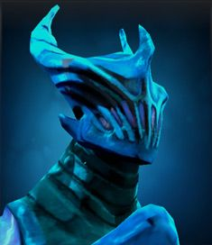

Dota Manual
Dota добра

Razor

Біографія
Серед жителів Пургаторію нікого не бояться так сильно, як Разора, привида блискавок. Своїм електричним батогом, що став символом жорстокості та нещадності, Разор стереже спокій у Вузькому лабіринті, тій самій павутині з ходів, стін і стежин, де душі мертвих вирішують свою долю залежно від їхнього розуму, здібностей та наполегливості. Разор літає над лабіринтом, шукає розгублених і з насолодою шмагає їх батогом, щоб покарати й змусити їх швидше вирішувати власну долю, квапить їх до світла чи у вічну темряву. Разор — втілення переваги і трудолюбивої сили. Утім, він дійсно отримує задоволення, коли доводить до божевілля своїми тортурами нещасні душі.
| 22 + 2,6 | |||||
| 22 + 2,1 | |||||
| 21 + 1,8 | |||||
| 23 - 25 | |||||
| -1 | |||||
| 280 | |||||
| Рівень | 1 | 15 | 25 | 30 | |
|---|---|---|---|---|---|
| Пошкодження | 45-47 | 73-75 | 93-95 | 103-105 | |
| Здоров'я | 640 | 1200 | 1600 | 1800 | |
| Мана | 327 | 495 | 615 | 675 | |
| Захист | 2.52 | 7 | 10.2 | 11.8 | |
| Час атаки | 1.33 | 1.05 | 0.91 | 0.85 | |
| Атак в секунду | 0.72 | 0.88 | 1 | 1.06 | |
| Дальність огляду | 1800 / 800 | ||||
| Дальність атаки | 475 (дальній бій) | ||||
| Базовий реген | 0 | ||||
| Базовый манареген | 0 | ||||
| Дерево навичок | Рівень | Навик | |||
| 25 | +180 к пассивному урону от Eye of the Storm | +80 к скорости атаки | |||
| 20 | -0,1 секунды от интервала между ударами Eyes of the Storm | +8 к броне | |||
| 15 | +12 к силе | +5 к урону в секунду у Static Link | |||
| 10 | +8 к ловкости | +175 к здоровью | |||